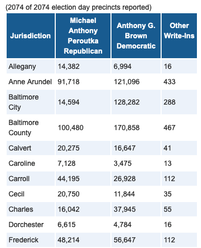
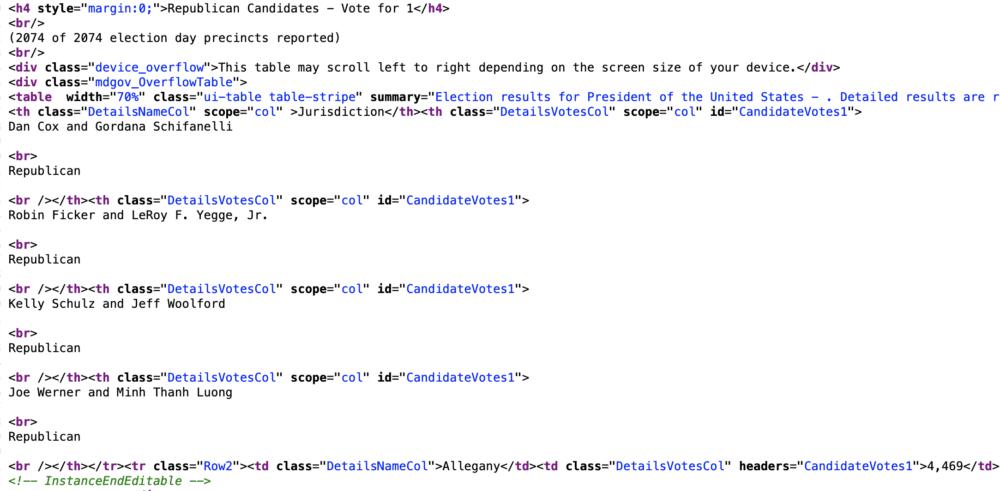
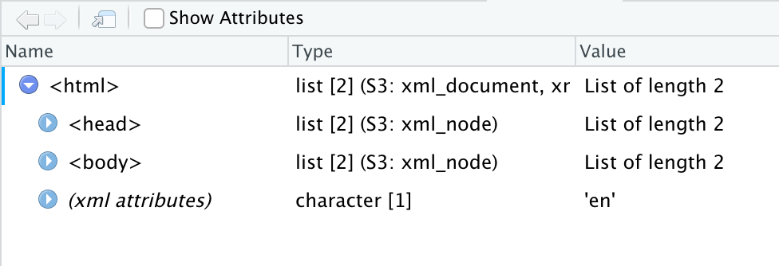
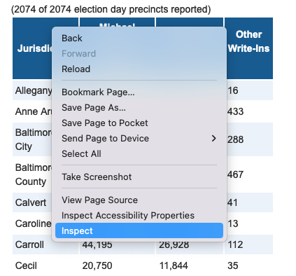

library(rvest)
library(tidyverse)
library(janitor)24 Scraping data with Rvest
Sometimes, governments put data online on a page or in a searchable database. And when you ask them for a copy of the data underneath the website, they say no.
Why? Because they have a website. That’s it. That’s their reason. They say they don’t have to give you the data because they’ve already given you the data, never mind that they haven’t given to you in a form you can actually load into R with ease.
Lucky for us, there’s a way for us to write code to get data even when an agency hasn’t made it easy: webscraping.
One of the most powerful tools you can learn as a data journalist is how to scrape data from the web. Scraping is the process of programming a computer to act like a human that opens a web browser, goes to a website, ingests the HTML from that website into R and turns it into data.
The degree of difficulty here goes from “Easy” to “So Hard You Want To Throw Your Laptop Out A Window.” And the curve between the two can be steep. You can learn how to scrape “Easy” in a day. The hard ones take a little more time, but it’s often well worth the effort because it lets you get stories you couldn’t get without it.
In this chapter, we’ll show you an easy one. And in the next chapter, we’ll so you a moderately harder one.
Let’s start easy.
We’re going to use a library called rvest, which you can install it the same way we’ve done all installs: go to the console and install.packages("rvest").
Like so many R package names, rvest is a bad pun. You’re supposed to read it to sound like “harvest”, as in “harvesting” information from a website the same way you’d harvest crops in a field.
We’ll load these packages first:
For this example, we’re going to work on loading a simple table of data from the Maryland State Board of Elections. This is a table of unofficial election results from the July Republican gubernatorial primary election.
Let’s suppose we can’t find a table like that for download, but we do see a version on the SBOE website at this URL: https://elections.maryland.gov/elections/2022/primary_results/gen_detail_results_2022_1_1_Republican.html.

We could get this table into R with the following manual steps: highlighting the text, copying it into Excel, saving it as a csv, and reading it into R. Or, we could write a few lines of webscraping code to have R do that for us!
In this simple example, it’s probably faster to do it manually than have R do it for us. And this table is unlikely to change much in the future.
Why would we ever write code to grab a single table? There’s several reasons:
- Our methods are transparent. If a colleague wants to run our code from scratch to factcheck our work, they don’t need to repeat the manual steps, which are harder to document than writing code.
- Let’s suppose we wanted to grab the same table every day, to monitor for changes (like, say, a table on a health department website that has COVID case numbers that update every day). Writing a script once, and pressing a single button every day is going to be much more efficient than doing this manually every day.
- If we’re doing it manually, we’re more likely to make a mistake, like maybe failing to copy every row from the whole table.
- It’s good practice to prepare us to do more complex scraping jobs. As we’ll see in the next chapter, if we ever want to grab the same table from hundreds of pages, writing code is much faster and easier than going to a hundred different pages ourselves and downloading data.
So, to scrape, the first thing we need to do is start with the URL. Let’s store it as an object called naics_url.
sboe_url <- "https://elections.maryland.gov/elections/2022/primary_results/gen_detail_results_2022_1_1_Republican.html"When we go to the web page, we can see a nicely-designed page that contains our information.
But what we really care about, for our purposes, is the html code that creates that page.
In our web browser, if we right-click anywhere on the page and select “view source” from the popup menu, we can see the source code. Or you can just copy this into Google Chrome: view-source:https://elections.maryland.gov/elections/2022/primary_results/gen_detail_results_2022_1_1_Republican.html.
Here’s a picture of what some of the source code looks like.

We’ll use those HTML tags – things like <table> and <tr> – to grab the info we need.
Okay, step 1.
Let’s write a bit of code to tell R to go to the URL for the page and ingest all of that HTML code. In the code below, we’re starting with our URL and using the read_html() function from rvest to ingest all of the page html, storing it as an object called naics_industry.
# read in the html
results <- sboe_url %>%
read_html()
# display the html below
results{html_document}
<html lang="en">
[1] <head>\n<meta http-equiv="Content-Type" content="text/html; charset=UTF-8 ...
[2] <body>\n <div class="container">\n <div class="skipNav">\n ...If you’re running this code in R Studio, in our environment window at right, you’ll see results as a “list of 2”.
This is not a dataframe, it’s a different type of data structure a “nested list.”
If we click on the name “results” in our environment window, we can see that it’s pulled in the html and shown us the general page structure. Nested within the <html> tag is the <head> and <body>, the two fundamental sections of most web pages. We’re going to pull information out of the <body> tag in a bit.

Now, our task is to just pull out the section of the html that contains the information we need.
But which part do we need from that mess of html code? To figure that out, we can go back to the page in a web browser like chrome, and use built in developer tools to “inspect” the html code underlying the page.
On the page, find the data we want to grab – “Table 2. NAICS Sectors” - and right click on the word “Sector” in the column header of the table. That will bring up a dropdown menu. Select “Inspect”, which will pop up a window called the “element inspector” that shows us where different elements on the page are located, what html tags created those elements, and other info.

The entire table that we want of results is actually contained inside an html <table>. It has a <tbody> that contains one row <tr> per county.
Because it’s inside of a table, and not some other kind of element (like a <div>), rvest has a special function for easily extracting and converting html tables, called html_table(). This function extracts all the html tables on the page, but this page only has one so we’re good.
# read in the html and extract all the tables
results <- sboe_url %>%
read_html() %>%
html_table()
# show the dataframe
results[[1]]
# A tibble: 25 × 5
Jurisdiction Dan Cox and Gordana Schifanelli\r\…¹ Robin…² Kelly…³ Joe W…⁴
<chr> <chr> <chr> <chr> <chr>
1 Allegany 4,469 399 2,259 99
2 Anne Arundel 18,039 711 18,581 513
3 Baltimore City 1,771 168 2,010 156
4 Baltimore County 18,129 842 18,247 649
5 Calvert 6,081 335 3,628 186
6 Caroline 2,533 49 1,409 39
7 Carroll 10,462 404 9,997 268
8 Cecil 4,998 203 3,487 128
9 Charles 3,473 176 1,709 127
10 Dorchester 2,475 75 916 42
# … with 15 more rows, and abbreviated variable names
# ¹`Dan Cox and Gordana Schifanelli\r\n\r\n\r\nRepublican`,
# ²`Robin Ficker and LeRoy F. Yegge, Jr.\r\n\r\n\r\nRepublican`,
# ³`Kelly Schulz and Jeff Woolford\r\n\r\n\r\nRepublican`,
# ⁴`Joe Werner and Minh Thanh Luong\r\n\r\n\r\nRepublican`In the environment window at right, look at results Note that it’s now a “list of 1”.
This gets a little complicated, but what you’re seeing here is a nested list that contains one data frame – also called tibbles – one for each table that exists on the web page we scraped.
So, all we need to do now is to store that single dataframe as an object. We can do that with this code, which says “keep only the second dataframe from our nested list.
# Read in all html from table, store all tables on page as nested list of dataframes.
results <- sboe_url %>%
read_html() %>%
html_table()
# Just keep the first dataframe in our list
results <- results[[1]]
# show the dataframe
results# A tibble: 25 × 5
Jurisdiction Dan Cox and Gordana Schifanelli\r\…¹ Robin…² Kelly…³ Joe W…⁴
<chr> <chr> <chr> <chr> <chr>
1 Allegany 4,469 399 2,259 99
2 Anne Arundel 18,039 711 18,581 513
3 Baltimore City 1,771 168 2,010 156
4 Baltimore County 18,129 842 18,247 649
5 Calvert 6,081 335 3,628 186
6 Caroline 2,533 49 1,409 39
7 Carroll 10,462 404 9,997 268
8 Cecil 4,998 203 3,487 128
9 Charles 3,473 176 1,709 127
10 Dorchester 2,475 75 916 42
# … with 15 more rows, and abbreviated variable names
# ¹`Dan Cox and Gordana Schifanelli\r\n\r\n\r\nRepublican`,
# ²`Robin Ficker and LeRoy F. Yegge, Jr.\r\n\r\n\r\nRepublican`,
# ³`Kelly Schulz and Jeff Woolford\r\n\r\n\r\nRepublican`,
# ⁴`Joe Werner and Minh Thanh Luong\r\n\r\n\r\nRepublican`We now have a proper dataframe, albeit with some lengthy column headers.
From here, we can do a little cleaning. First we’ll use clean_names() to lower the column names. Then use rename() to replace the candidate column names with simpler versions. We can just use the column positions instead of writing out the full names, which is nice.
Then let’s use slice() to remove the last row – row number 25 – which contains totals and percentages that we don’t need. Finally, we’ll make sure the vote tallies are numbers using mutate and gsub(), which we use to replace all the commas with nothing.
# Read in all html from table, get the HTML table.
results <- sboe_url %>%
read_html() %>%
html_table()
# Standardize column headers, remove last row
results <- results[[1]] %>%
clean_names() %>%
rename(cox = 2, ficker = 3, schulz = 4, werner = 5) %>%
slice(-25) %>%
mutate(cox = as.numeric(gsub(",","", cox))) %>%
mutate(ficker = as.numeric(gsub(",","", ficker))) %>%
mutate(schulz = as.numeric(gsub(",","", schulz))) %>%
mutate(werner = as.numeric(gsub(",","", werner)))
# show the dataframe
results# A tibble: 24 × 5
jurisdiction cox ficker schulz werner
<chr> <dbl> <dbl> <dbl> <dbl>
1 Allegany 4469 399 2259 99
2 Anne Arundel 18039 711 18581 513
3 Baltimore City 1771 168 2010 156
4 Baltimore County 18129 842 18247 649
5 Calvert 6081 335 3628 186
6 Caroline 2533 49 1409 39
7 Carroll 10462 404 9997 268
8 Cecil 4998 203 3487 128
9 Charles 3473 176 1709 127
10 Dorchester 2475 75 916 42
# … with 14 more rowsAnd there we go. We now have a nice tidy dataframe of Maryland GOP gubernatorial primary results that we could ask some questions of.